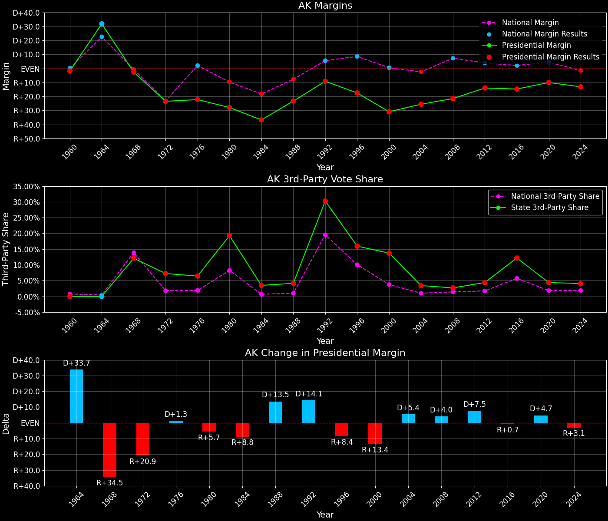

Alaska (AK) — Statewide

Margins · 3P share · Pres. deltas

Relative margins · Relative 3P · Rel. deltas
Alaska (AK) — Total Data
| Year | EVs | D | R | Margin | Rel. Margin | Nat. Margin | Margin Δ | Rel. Margin Δ | Nat. Margin Δ | Total votes |
|---|---|---|---|---|---|---|---|---|---|---|
| 1968 | 3 | 35,411(42.6%) | 37,600(45.3%) | R+2.6 | R+2.1 | R+0.6 | 83,035 | |||
| 1972 | 3 | 32,967(34.6%) | 55,349(58.1%) | R+23.5 | D+0.0 | R+23.5 | R+20.9 | D+2.1 | R+23.0 | 95,219 |
| 1976 | 3 | 44,058(35.7%) | 71,555(57.9%) | R+22.3 | R+24.4 | D+2.2 | D+1.3 | R+24.5 | D+25.7 | 123,574 |
| 1980 | 3 | 41,842(26.4%) | 86,112(54.3%) | R+27.9 | R+18.0 | R+9.9 | R+5.7 | D+6.4 | R+12.1 | 158,445 |
| 1984 | 3 | 62,007(29.9%) | 138,377(66.7%) | R+36.8 | R+18.7 | R+18.1 | R+8.8 | R+0.6 | R+8.2 | 207,605 |
| 1988 | 3 | 72,584(36.3%) | 119,251(59.6%) | R+23.3 | R+15.6 | R+7.7 | D+13.5 | D+3.1 | D+10.4 | 200,116 |
| 1992 | 3 | 78,294(30.3%) | 102,000(39.5%) | R+9.2 | R+14.8 | D+5.6 | D+14.1 | D+0.8 | D+13.3 | 258,506 |
| 1996 | 3 | 80,380(33.3%) | 122,746(50.8%) | R+17.5 | R+26.1 | D+8.6 | R+8.4 | R+11.3 | D+3.0 | 241,620 |
| 2000 | 3 | 79,004(27.7%) | 167,398(58.6%) | R+31.0 | R+31.5 | D+0.5 | R+13.4 | R+5.4 | R+8.0 | 285,560 |
| 2004 | 3 | 111,025(35.5%) | 190,889(61.1%) | R+25.5 | R+23.1 | R+2.5 | D+5.4 | D+8.4 | R+3.0 | 312,598 |
| 2008 | 3 | 123,594(37.9%) | 193,841(59.4%) | R+21.5 | R+28.8 | D+7.3 | D+4.0 | R+5.7 | D+9.7 | 326,197 |
| 2012 | 3 | 122,640(40.8%) | 164,676(54.8%) | R+14.0 | R+17.9 | D+3.9 | D+7.5 | D+10.9 | R+3.4 | 300,495 |
| 2016 | 3 | 116,454(36.6%) | 163,387(51.3%) | R+14.7 | R+16.8 | D+2.1 | R+0.7 | D+1.0 | R+1.8 | 318,608 |
| 2020 | 3 | 153,778(42.8%) | 189,951(52.8%) | R+10.1 | R+14.5 | D+4.4 | D+4.7 | D+2.3 | D+2.3 | 359,530 |
| 2024 | 3 | 140,026(41.4%) | 184,458(54.5%) | R+13.1 | R+11.6 | R+1.5 | R+3.1 | D+2.9 | R+6.0 | 338,177 |
Column explanations
- Year
- Election year.
- EVs
- Number of electoral votes allocated to this state or unit.
- D
- Number of votes for the Democratic candidate (raw count(pct%)).
- R
- Number of votes for the Republican candidate (raw count(pct%)).
- Margin
- Margin between the two major-party candidates, including third-party votes ((D - R)/total).
- Rel. Margin
- The presidential margin relative to the national presidential margin (Margin - Nat. Margin).
- Nat. Margin
- The national presidential margin for that year, including third-party votes ((D_total - R_total)/total_votes).
- Δ
- Change (delta) in the value from the previous election year. Blank if no data for previous year.
- Total votes
- Total voter turnout or ballots cast (when provided).
Alaska (AK) — Third-Party Data
| Year | Other votes | 3rd Party Share | 3rd Party Nat. Share | 3rd Party Rel. Share |
|---|---|---|---|---|
| 1968 | 10,024(12.1%) | T+12.1 | T+13.6 | T-1.5 |
| 1972 | 6,903(7.2%) | T+7.2 | T+0.1 | T+7.2 |
| 1976 | 7,961(6.4%) | T+6.4 | T+0.3 | T+6.1 |
| 1980 | 30,491(19.2%) | T+19.2 | T+7.0 | T+12.3 |
| 1984 | 7,221(3.5%) | T+3.5 | T+0.1 | T+3.4 |
| 1988 | 8,281(4.1%) | T+4.1 | T+0.2 | T+3.9 |
| 1992 | 78,212(30.3%) | T+30.3 | T+19.2 | T+11.0 |
| 1996 | 38,494(15.9%) | T+15.9 | T+9.7 | T+6.3 |
| 2000 | 39,158(13.7%) | T+13.7 | T+3.7 | T+10.1 |
| 2004 | 10,684(3.4%) | T+3.4 | T+0.8 | T+2.6 |
| 2008 | 8,762(2.7%) | T+2.7 | T+1.4 | T+1.3 |
| 2012 | 13,179(4.4%) | T+4.4 | T+1.6 | T+2.8 |
| 2016 | 38,767(12.2%) | T+12.2 | T+5.5 | T+6.6 |
| 2020 | 15,801(4.4%) | T+4.4 | T+1.8 | T+2.6 |
| 2024 | 13,693(4.0%) | T+4.0 | T+1.9 | T+2.2 |
Column explanations
- Year
- Election year.
- Other votes
- Number of votes for third-party (other) candidates (raw count(pct%)).
- 3rd Party Share
- Share of the vote received by third-party (other) candidates.
- 3rd Party Nat. Share
- The national third-party share for that year (3P votes / total votes).
- 3rd Party Rel. Share
- Third-party share relative to the national third-party share (3P share - Nat. 3P share).

Two-party margins · relative · deltas
Alaska (AK) — Two-Party Data
| Year | 2-Party Margin | 2-Party Nat. Margin | 2-Party Rel. Margin | 2-Party Margin Δ | 2-Party Nat. Margin Δ | 2-Party Rel. Margin Δ |
|---|---|---|---|---|---|---|
| 1968 | R+3.0 | R+0.7 | R+2.3 | |||
| 1972 | R+25.3 | R+23.6 | R+1.8 | R+22.3 | R+22.9 | D+0.5 |
| 1976 | R+23.8 | D+2.2 | R+26.0 | D+1.6 | D+25.8 | R+24.2 |
| 1980 | R+34.6 | R+10.6 | R+24.0 | R+10.8 | R+12.8 | D+2.0 |
| 1984 | R+38.1 | R+18.1 | R+20.0 | R+3.5 | R+7.5 | D+4.0 |
| 1988 | R+24.3 | R+7.8 | R+16.6 | D+13.8 | D+10.4 | D+3.4 |
| 1992 | R+13.1 | D+6.9 | R+20.1 | D+11.2 | D+14.7 | R+3.5 |
| 1996 | R+20.9 | D+9.5 | R+30.3 | R+7.7 | D+2.6 | R+10.3 |
| 2000 | R+35.9 | D+0.5 | R+36.4 | R+15.0 | R+8.9 | R+6.1 |
| 2004 | R+26.5 | R+2.5 | R+24.0 | D+9.4 | R+3.0 | D+12.4 |
| 2008 | R+22.1 | D+7.4 | R+29.5 | D+4.3 | D+9.8 | R+5.5 |
| 2012 | R+14.6 | D+3.9 | R+18.6 | D+7.5 | R+3.4 | D+10.9 |
| 2016 | R+16.8 | D+2.2 | R+19.0 | R+2.1 | R+1.7 | R+0.4 |
| 2020 | R+10.5 | D+4.5 | R+15.1 | D+6.2 | D+2.3 | D+3.9 |
| 2024 | R+13.7 | R+1.6 | R+12.1 | R+3.2 | R+6.1 | D+2.9 |
Column explanations
- Year
- Election year.
- 2-Party Margin
- Margin between the two major-party candidates, ignoring third-party votes ((D - R)/(D + R)).
- 2-Party Nat. Margin
- The national presidential margin for that year, including third-party votes ((D_total - R_total)/total_votes).
- 2-Party Rel. Margin
- The presidential margin relative to the national presidential margin (Margin - Nat. Margin).
- Δ
- Change (delta) in the value from the previous election year. Blank if no data for previous year.